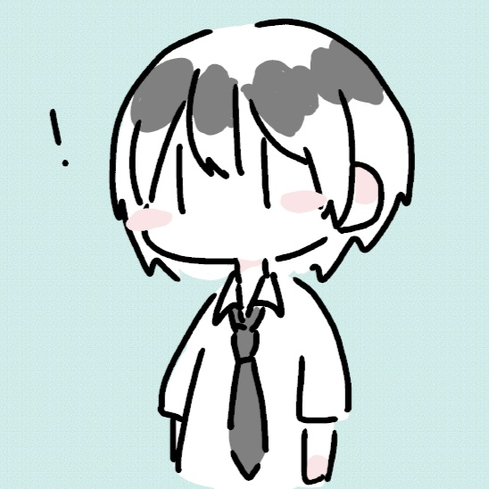
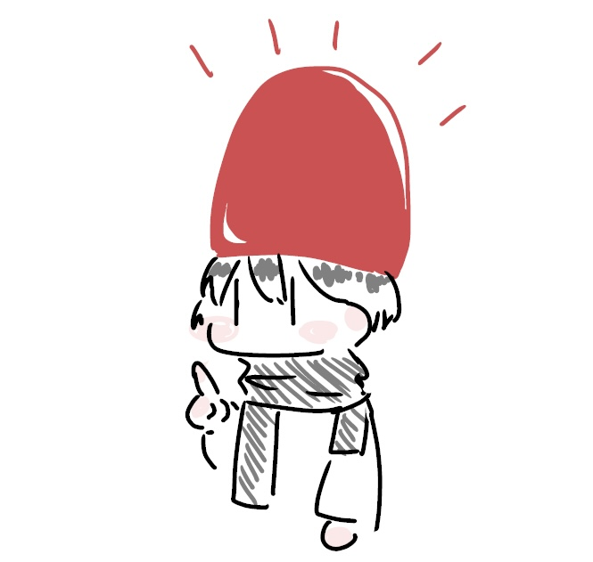
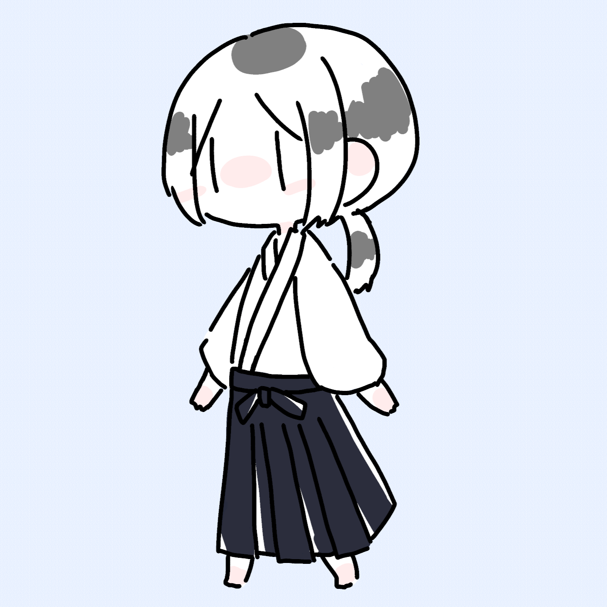
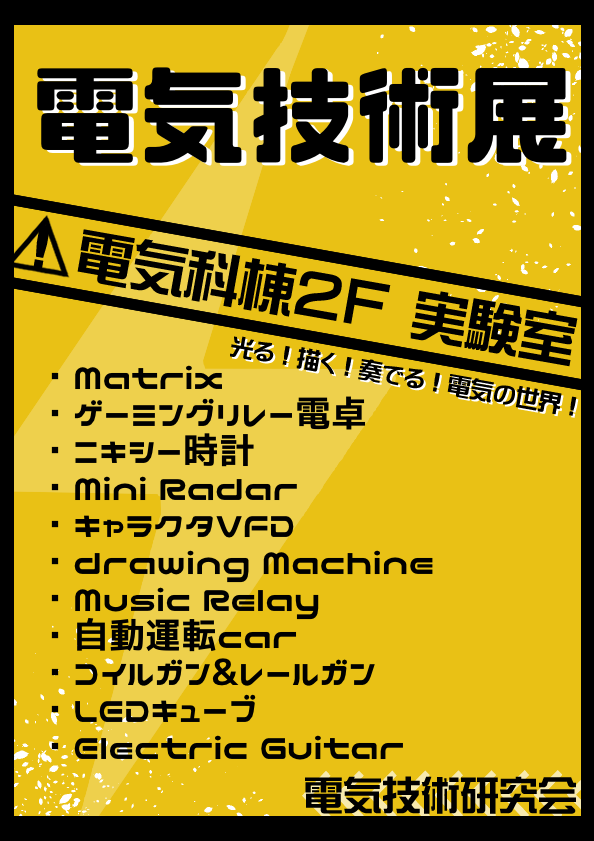
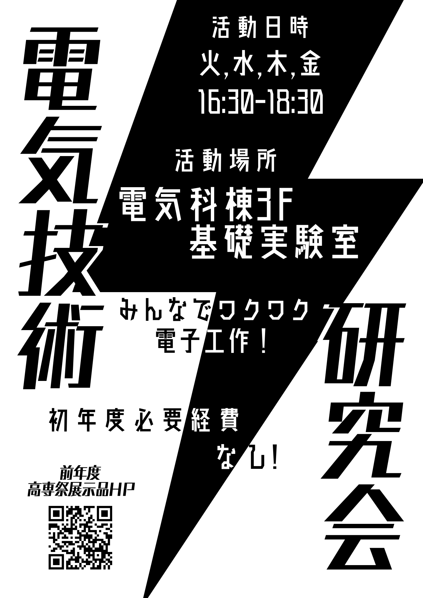
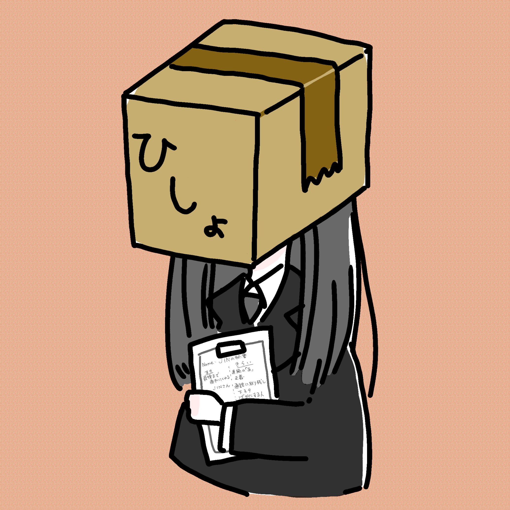
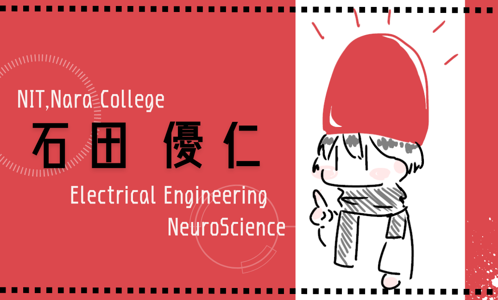
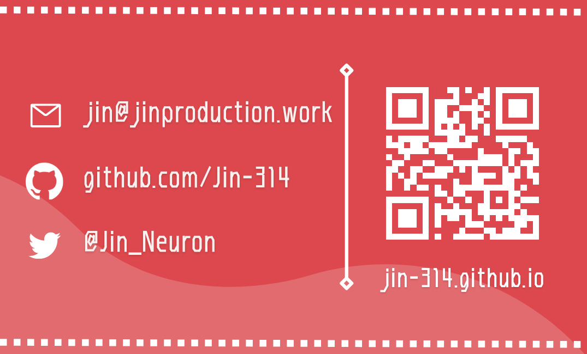
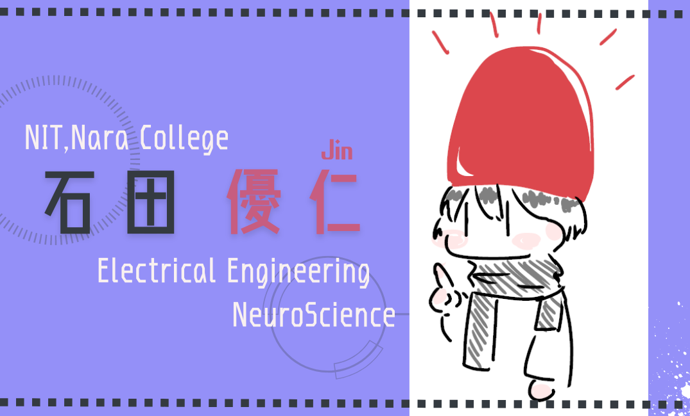
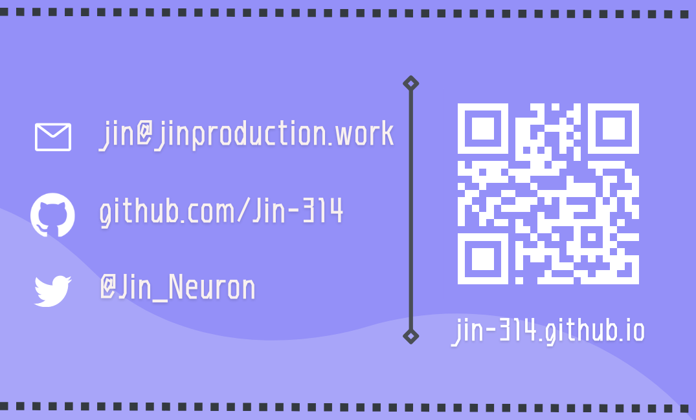

ABOUT
初めまして！佐野です！
制作物などぼちぼち載せていこうと思います。
introduce
高専の情報工学科2年です。
軽音部と電研(電気技術研究会)に所属しています。
電研では一応副部長をやらせてもらってます。
ポスターやイラストの制作が趣味です。
需要があればTwitterのDMまでお気軽にご連絡ください。
PORTFOLIO
私が描いたイラストやポスターの作品集です。
随時更新していきます。
snsアイコン

私のTwitterアイコンです

@Jin_Neuron
色んな所で使っていただいてます！
嬉しいです

@Basyo_Engineer
電気技術研究会

令和4年の高専祭のポスター
令和4年の高専祭HPのファビコン

新入生募集用ポスター
あ、部員募集してます！
その他

jinの秘書botのアイコン
ヘッダーの全容はこんな感じです
普段の落書きなどはTwitterにあります。
落書き




@Jin_Neuronさんの名刺デザインです
LINKS
連絡はTwitterのDMまでお願いします。
↓日常↓
@_Uz3↓イラスト↓
@Labi1192↓高専垢↓
@ABCDEFijijGithub
sano0000OTHERS
準備中です。まだまだ制作途中ですみません！！！